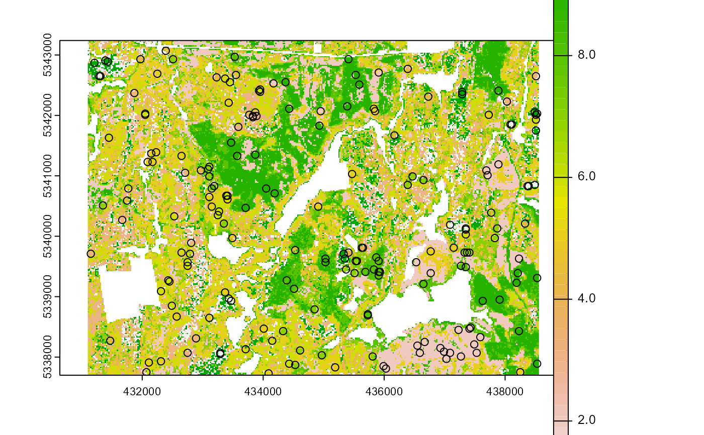

sample_strat.RdSampling based on a stratified raster.
sample_strat(
sraster,
nSamp,
force = FALSE,
allocation = "prop",
mraster = NULL,
mindist = NULL,
existing = NULL,
include = FALSE,
access = NULL,
buff_inner = NULL,
buff_outer = NULL,
wrow = 3,
wcol = 3,
plot = FALSE,
details = FALSE,
filename = NULL,
overwrite = FALSE
)spatRaster. Stratification raster to be used for sampling.
Numeric. Number of desired samples. existing include and force influence this value.
Logical. Default = FALSE - force nSamp to be exactly the user defined value
in cases where nSamp and sraster strata count are not equally divisible. Has no effect when existing
is provided.
Character. Allocation algorithm to be used. Either prop (default) for proportional allocation
or optim for optimal allocation (equal sampling cost) or equal for equal number of samples (defined by nSamp)
for each strata.
spatRaster. ALS metric raster. Required when allocation = optim.
Numeric. Minimum allowable distance between selected samples. Default = 100.
sf or data.frame. Existing plot network.
Logical. If TRUE include existing plots in nSamp total.
sf. Road access network - must be lines.
Numeric. Inner buffer boundary specifying distance from access where plots cannot be sampled.
Numeric. Outer buffer boundary specifying distance from access where plots can be sampled.
Numeric. Number of row in the focal window (default is 3).
Numeric. Number of columns in the focal window (default is 3).
Logical. Plots existing (circles) and new (crosses) samples.
Logical. If FALSE (default) output is sf object of
stratified samples. If TRUE return a list
where $details additional sampling information and $raster
is an sf object of stratified samples.
Character. Path to write output samples.
Logical. Choice to overwrite existing filename if it exists.
An sf object with nSamp stratified samples.
The sampling is performed in 2 stages:
Rule 1 - Sample within grouped stratum pixels defined within the
wrow, wcol parameters
Rule 2 - If no more samples exist to satisfy desired sampling count,
individual stratum pixels are sampled.
The rule applied to a allocate each sample is defined in the rule attribute of output samples.
Queinnec, M., White, J. C., & Coops, N. C. (2021). Comparing airborne and spaceborne photon-counting LiDAR canopy structural estimates across different boreal forest types. Remote Sensing of Environment, 262 (August 2020), 112510. https://doi.org/10.1016/j.rse.2021.112510
Other sample functions:
sample_ahels(),
sample_balanced(),
sample_clhs(),
sample_srs(),
sample_systematic()
#--- Load raster and access files ---#
r <- system.file("extdata", "kmeans.tif", package = "sgsR")
sr <- terra::rast(r)
a <- system.file("extdata", "roads.shp", package = "sgsR")
ac <- sf::st_read(a)
#> Reading layer `roads' from data source
#> `C:\Users\tgood.stu\AppData\Local\Temp\RtmpCYYtR3\temp_libpath29b832d555dc\sgsR\extdata\roads.shp'
#> using driver `ESRI Shapefile'
#> Simple feature collection with 167 features and 2 fields
#> Geometry type: MULTILINESTRING
#> Dimension: XY
#> Bounding box: xmin: 431100 ymin: 5337700 xmax: 438560 ymax: 5343240
#> Projected CRS: UTM_Zone_17_Northern_Hemisphere
e <- system.file("extdata", "existing.shp", package = "sgsR")
e <- sf::st_read(e)
#> Reading layer `existing' from data source
#> `C:\Users\tgood.stu\AppData\Local\Temp\RtmpCYYtR3\temp_libpath29b832d555dc\sgsR\extdata\existing.shp'
#> using driver `ESRI Shapefile'
#> Simple feature collection with 100 features and 1 field
#> Geometry type: POINT
#> Dimension: XY
#> Bounding box: xmin: 431110 ymin: 5337750 xmax: 438550 ymax: 5343230
#> CRS: unknown
#--- perform stratified sampling random sampling ---#
sample_strat(
sraster = sr,
nSamp = 200,
plot = TRUE
)
#> Implementing porportional allocation of samples
#> nSamp of 200 is not perfectly divisible based on strata distribution. nSamp of 199 will be returned. Use "force = TRUE" to brute force to 200.
#> Processing strata : 1
#> Processing strata : 2
#> Processing strata : 3
#> Processing strata : 4
#> Processing strata : 5
#> Processing strata : 6
#> Processing strata : 7
#> Processing strata : 8
#> Processing strata : 9
#> Processing strata : 10
#> Simple feature collection with 199 features and 3 fields
#> Geometry type: POINT
#> Dimension: XY
#> Bounding box: xmin: 431130 ymin: 5337750 xmax: 438490 ymax: 5342950
#> CRS: +proj=utm +zone=17 +ellps=GRS80 +towgs84=0,0,0,0,0,0,0 +units=m +no_defs
#> First 10 features:
#> strata type rule geometry
#> x 1 new rule1 POINT (433310 5338050)
#> x1 1 new rule1 POINT (438110 5341850)
#> x2 1 new rule1 POINT (438370 5340830)
#> x3 1 new rule1 POINT (433190 5338770)
#> x4 1 new rule1 POINT (431310 5342650)
#> x5 1 new rule1 POINT (438090 5341850)
#> x6 1 new rule1 POINT (433330 5338030)
#> x7 1 new rule1 POINT (437130 5340170)
#> x8 1 new rule1 POINT (432770 5338430)
#> x9 1 new rule1 POINT (433290 5338050)
#--- perform stratified sampling random sampling ---#
sample_strat(
sraster = sr,
nSamp = 200,
plot = TRUE,
force = TRUE
)
#> Implementing porportional allocation of samples
#> Forcing 200 total samples.
#> Processing strata : 1
#> Processing strata : 2
#> Processing strata : 3
#> Processing strata : 4
#> Processing strata : 5
#> Processing strata : 6
#> Processing strata : 7
#> Processing strata : 8
#> Processing strata : 9
#> Processing strata : 10

#> Simple feature collection with 200 features and 3 fields
#> Geometry type: POINT
#> Dimension: XY
#> Bounding box: xmin: 431170 ymin: 5337770 xmax: 438530 ymax: 5343190
#> CRS: +proj=utm +zone=17 +ellps=GRS80 +towgs84=0,0,0,0,0,0,0 +units=m +no_defs
#> First 10 features:
#> strata type rule geometry
#> x 1 new rule1 POINT (432730 5338350)
#> x1 1 new rule1 POINT (438510 5340850)
#> x2 1 new rule1 POINT (436770 5341330)
#> x3 1 new rule1 POINT (433470 5338930)
#> x4 1 new rule1 POINT (436770 5341350)
#> x5 1 new rule1 POINT (438490 5340850)
#> x6 1 new rule1 POINT (433310 5338030)
#> x7 1 new rule1 POINT (431290 5342650)
#> x8 1 new rule1 POINT (433290 5338050)
#> x9 1 new rule1 POINT (433190 5338770)
#--- extract strata values to existing samples ---#
e.sr <- extract_strata(sraster = sr, existing = e)
sample_strat(
sraster = sr,
nSamp = 200,
access = ac,
existing = e.sr,
mindist = 200,
buff_inner = 50,
buff_outer = 200
)
#> Implementing porportional allocation of samples
#> nSamp of 200 is not perfectly divisible based on strata distribution. nSamp of 199 will be returned. Use "force = TRUE" to brute force to 200.
#> An access layer has been provided. An internal buffer of 50 m and an external buffer of 200 m have been applied
#> Processing strata : 1
#> Buffered area contains 2273 available candidates. Sampling to reach 13 samples starting.
#> Processing strata : 2
#> Buffered area contains 6190 available candidates. Sampling to reach 29 samples starting.
#> Processing strata : 3
#> Buffered area contains 2213 available candidates. Sampling to reach 14 samples starting.
#> Processing strata : 4
#> Buffered area contains 3230 available candidates. Sampling to reach 21 samples starting.
#> Processing strata : 5
#> Buffered area contains 4430 available candidates. Sampling to reach 25 samples starting.
#> Processing strata : 6
#> Buffered area contains 4338 available candidates. Sampling to reach 24 samples starting.
#> Processing strata : 7
#> Buffered area contains 3774 available candidates. Sampling to reach 24 samples starting.
#> Processing strata : 8
#> Buffered area contains 4061 available candidates. Sampling to reach 16 samples starting.
#> Processing strata : 9
#> Buffered area contains 6063 available candidates. Sampling to reach 23 samples starting.
#> Processing strata : 10
#> Buffered area contains 1666 available candidates. Sampling to reach 10 samples starting.
#> Simple feature collection with 299 features and 3 fields
#> Geometry type: POINT
#> Dimension: XY
#> Bounding box: xmin: 431110 ymin: 5337710 xmax: 438550 ymax: 5343230
#> CRS: +proj=utm +zone=17 +ellps=GRS80 +towgs84=0,0,0,0,0,0,0 +units=m +no_defs
#> First 10 features:
#> strata type rule geometry
#> 36 1 existing existing POINT (431930 5338510)
#> 41 1 existing existing POINT (433990 5341870)
#> x 1 new rule1 POINT (438090 5341850)
#> x1 1 new rule1 POINT (438490 5340850)
#> x2 1 new rule1 POINT (431310 5342670)
#> x3 1 new rule2 POINT (434330 5338170)
#> x4 1 new rule2 POINT (436810 5341430)
#> x5 1 new rule2 POINT (432070 5337710)
#> x6 1 new rule2 POINT (432770 5339990)
#> x7 1 new rule2 POINT (437190 5341610)
sample_strat(
sraster = sr,
nSamp = 200,
access = ac,
buff_inner = 50,
buff_outer = 200,
filename = tempfile(fileext = ".shp")
)
#> Implementing porportional allocation of samples
#> nSamp of 200 is not perfectly divisible based on strata distribution. nSamp of 199 will be returned. Use "force = TRUE" to brute force to 200.
#> An access layer has been provided. An internal buffer of 50 m and an external buffer of 200 m have been applied
#> Processing strata : 1
#> Buffered area contains 2273 available candidates. Sampling to reach 13 samples starting.
#> Processing strata : 2
#> Buffered area contains 6190 available candidates. Sampling to reach 29 samples starting.
#> Processing strata : 3
#> Buffered area contains 2213 available candidates. Sampling to reach 14 samples starting.
#> Processing strata : 4
#> Buffered area contains 3230 available candidates. Sampling to reach 21 samples starting.
#> Processing strata : 5
#> Buffered area contains 4430 available candidates. Sampling to reach 25 samples starting.
#> Processing strata : 6
#> Buffered area contains 4338 available candidates. Sampling to reach 24 samples starting.
#> Processing strata : 7
#> Buffered area contains 3774 available candidates. Sampling to reach 24 samples starting.
#> Processing strata : 8
#> Buffered area contains 4061 available candidates. Sampling to reach 16 samples starting.
#> Processing strata : 9
#> Buffered area contains 6063 available candidates. Sampling to reach 23 samples starting.
#> Processing strata : 10
#> Buffered area contains 1666 available candidates. Sampling to reach 10 samples starting.
#> Writing layer `file90543ae6ba7' to data source
#> `C:\Users\tgood.stu\AppData\Local\Temp\RtmpQHPFYl\file90543ae6ba7.shp' using driver `ESRI Shapefile'
#> Writing 199 features with 3 fields and geometry type Point.
#> Simple feature collection with 199 features and 3 fields
#> Geometry type: POINT
#> Dimension: XY
#> Bounding box: xmin: 431290 ymin: 5337750 xmax: 438510 ymax: 5343170
#> CRS: +proj=utm +zone=17 +ellps=GRS80 +towgs84=0,0,0,0,0,0,0 +units=m +no_defs
#> First 10 features:
#> strata type rule geometry
#> x 1 new rule1 POINT (438370 5340830)
#> x1 1 new rule1 POINT (438110 5341850)
#> x2 1 new rule1 POINT (431310 5342670)
#> x3 1 new rule1 POINT (431290 5342670)
#> x4 1 new rule1 POINT (438090 5341850)
#> x5 1 new rule1 POINT (438390 5340830)
#> x6 1 new rule1 POINT (438490 5340850)
#> x7 1 new rule2 POINT (433650 5342030)
#> x8 1 new rule2 POINT (436690 5341650)
#> x9 1 new rule2 POINT (432870 5339430)
#--- Load mraster for optimal allocation ---#
mr <- system.file("extdata", "wall_metrics.tif", package = "sgsR")
mr <- terra::rast(mr)
sample_strat(
sraster = sr,
nSamp = 200,
allocation = "optim",
mraster = mr$zmax,
access = ac,
buff_inner = 50,
buff_outer = 200,
filename = tempfile(fileext = ".shp")
)
#> Implementing optimal allocation of samples based on variability of 'zmax'
#> An access layer has been provided. An internal buffer of 50 m and an external buffer of 200 m have been applied
#> Processing strata : 1
#> Buffered area contains 2273 available candidates. Sampling to reach 18 samples starting.
#> Processing strata : 2
#> Buffered area contains 6190 available candidates. Sampling to reach 29 samples starting.
#> Processing strata : 3
#> Buffered area contains 2213 available candidates. Sampling to reach 18 samples starting.
#> Processing strata : 4
#> Buffered area contains 3230 available candidates. Sampling to reach 18 samples starting.
#> Processing strata : 5
#> Buffered area contains 4430 available candidates. Sampling to reach 21 samples starting.
#> Processing strata : 6
#> Buffered area contains 4338 available candidates. Sampling to reach 23 samples starting.
#> Processing strata : 7
#> Buffered area contains 3774 available candidates. Sampling to reach 24 samples starting.
#> Processing strata : 8
#> Buffered area contains 4061 available candidates. Sampling to reach 19 samples starting.
#> Processing strata : 9
#> Buffered area contains 6063 available candidates. Sampling to reach 14 samples starting.
#> Processing strata : 10
#> Buffered area contains 1666 available candidates. Sampling to reach 16 samples starting.
#> Writing layer `file90545cf2144' to data source
#> `C:\Users\tgood.stu\AppData\Local\Temp\RtmpQHPFYl\file90545cf2144.shp' using driver `ESRI Shapefile'
#> Writing 200 features with 3 fields and geometry type Point.
#> Simple feature collection with 200 features and 3 fields
#> Geometry type: POINT
#> Dimension: XY
#> Bounding box: xmin: 431290 ymin: 5337750 xmax: 438490 ymax: 5343190
#> CRS: +proj=utm +zone=17 +ellps=GRS80 +towgs84=0,0,0,0,0,0,0 +units=m +no_defs
#> First 10 features:
#> strata type rule geometry
#> x 1 new rule1 POINT (438090 5341850)
#> x1 1 new rule1 POINT (438110 5341850)
#> x2 1 new rule1 POINT (431290 5342670)
#> x3 1 new rule1 POINT (438490 5340850)
#> x4 1 new rule1 POINT (431310 5342670)
#> x5 1 new rule1 POINT (438370 5340830)
#> x6 1 new rule1 POINT (438390 5340830)
#> x7 1 new rule2 POINT (436830 5341390)
#> x8 1 new rule2 POINT (436570 5342930)
#> x9 1 new rule2 POINT (431750 5337850)